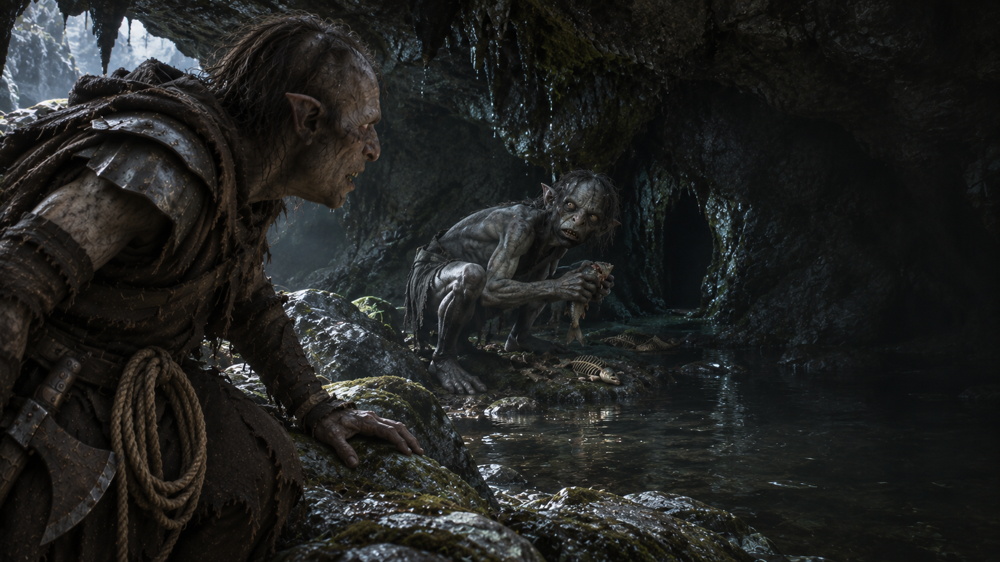

Chapitre VII · Face à la proie
La Grotte de Gollum
Deux yeux dans l’ombre. La traque touche au but.
Approcher sans bruitDeux yeux dans le noir
Le passage débouche sur une grotte basse. Au fond, une petite silhouette dévore un poisson, accroupie au bord d’une mare. Votre armure racle la pierre. Deux yeux se tournent vers vous.
« Ça sent l’Orque… Méchant Orque ! Il veut nous attraper, oui ! »
Gollum se ramasse sur lui-même, prêt à bondir vers une fissure. Vous pourriez vous jeter sur lui, mais les pierres sont couvertes de mousse et il connaît les lieux.
Un poisson abandonné repose près de l’entrée. Avec la corde à votre ceinture, vous pourriez préparer un piège pour l’attirer loin de sa sortie. Pour une fois, votre dîner pourrait servir à autre chose qu’à remplir votre estomac.